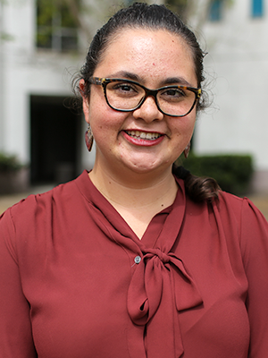
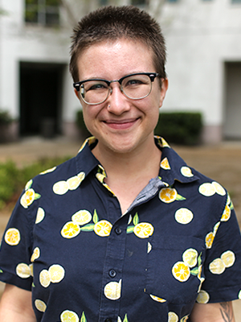

Current Members

Prof. Bruce Bimber
Digital media in collective action; belief in conspiracies and falsehoods; social media and democratic backsliding

Daniel Cervantes
Elites and the flow of political falsehoods

Pierce Christoffersen
News & digital media, public policy, technology & metrics
Prof. Katherine Elder
Health policy and public health
Stephanie Herrera
Social media, identity formation, and intergroup relations

Katherine Carmichael
Local politics and community engaged research
Deshdeep Dhankhar
Institutions and comparative politics

Prof. Dan Lane
Social media and political engagement, intergroup relations, and political inequality

Sterling Lankford
Public opinion, selective exposure, and falsehoods
Hyojin Lee
Immigration, humor and satire, and marginalized groups

Prof. Guadalupe "Lupita" Madrigal
Media, Latinx/a/o populations, race, information, social identity, and immigration
Ying Qi Pan
Digital inequality, technology, and gender
Prof. Prateekshit "Kanu" Pandey
Humor and satire in democratic participation, news sharing, and individual political agency

Emma Scott
Political memes and online political humor
Yifei Wang
Social identity in social media
Recent Alumni
- Dr. Hannah Overbye-Thompson Michigan State University
- Dr. Nancy Molina-Rogers UCLA
- Dr. Julien Labarre University of Zurich
- Tara Mandrekar Design It For Us
- Dr. Daniel Gomez New Mexico State University
- Dr. Shanshan Lu
- Ilia Nikiforov Independent Consultant
- Dr. Rajkamal Singh New York University